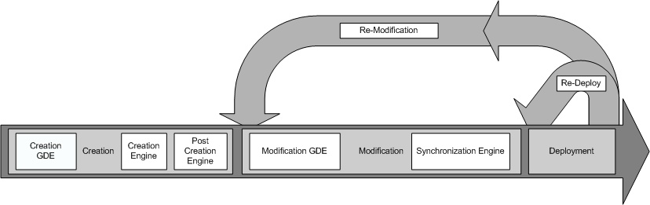

Table of Contents

Figure 1. Overall service development
process.
The Introduce toolkit is designed to support the three main steps of service development: 1) Creation of Basic Service Structure. The service developer describes at the highest level some basic attributes about the service such as service name and service namespace. Once the user has set these basic service configuration properties, Ineroduce will create the basic service implementation, to which the developer can then add application-specific methods and security options through the service modification steps. 2) Service Modification. The modification step allows the developer to add, remove, and modify service methods, properties, resources, service contexts, and service/method level security. In this step, the developer creates strongly-typed seivice interfaces using well-defined, published schemas, which are registered in a system like the Mobius GME, as the type definitions of the input and output parameters of the service methods. 3) Deployment. The developer can deploy the service which has been created with Introduce to a Grid service container (e.g., a Globus or Tomcat service container).
A service developer can access the functions required to execute these throe steps through the Graphical Development Environment (GDE) of Introduce. The runtime support behind the GDE functionality is provided by the Introduce engine, which consists of the Service Creator, Service Synchronizer, and Service Deployer components. The toolkit provides an extension framework that allows Introduce to be customized and extended for custom service types and discovery of custom data types. In the following sections, we describe the GDE, the Introduce engine, and the extension framework in greater detail.
Java 1.4.2 or greater ( www.java.sun.com )
The Globus Toolkit Version 4.0.2 ( www.globus.org )